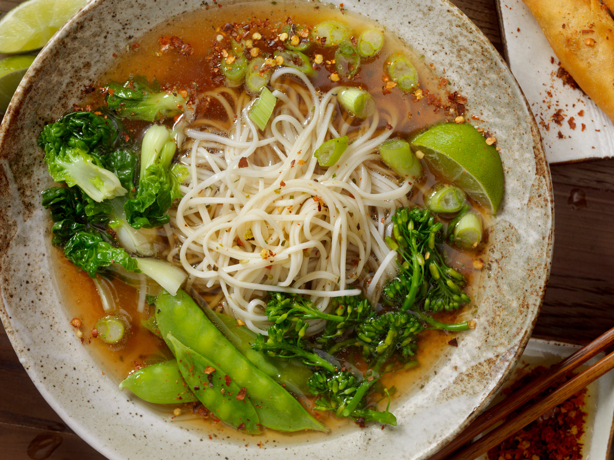

Nunca foi tão fácil - ou menos complicado - ser vegan em Portugal, principalmente se falarmos dos dois pólos urbanos com maior população. Numa altura em que a ideia do "Veganuary" (a Vogue já explica) prolifera, faça do mês de janeiro o seu test-drive para uma alimentação vegetal.

© iStock
Veganuary é uma organização solidária que pretende defender e promover a dieta vegana no mês de janeiro - e no resto do ano, na verdade, fazendo deste início uma espécie de pontapé de saída para uma mudança no estilo de vida. Os argumentos já são sobejamente conhecidos: a diminuição da pegada ecológica (os gases nocivos libertados pela indústria animal são muito piores para o ambiente que o dióxido de carbono dos carros e o uso de recursos do planeta que esta área exige vão muito além das possibilidades do planeta) bem como a preservação da vida animal são fatores que não precisam de muitos mais aliados para converter uma população cada vez mais adepta deste tipo de regime.
Uma das variáveis mais dissuasoras, em contrapartida, é a ideia de que é uma alimentação sensaborona, aborrecida e limitada, mas estes restaurantes provam que esse preconceito não poderia estar mais longe da verdade. Uma seleção de restaurantes que não são sempre exclusivamente vegans, mas todos ótimos para ir com vegans, vegetarianos e até os mais céticos desta opção gastronómica.
Lisboa
Ao 26 Vegan Food Project: a boa atmosfera da morada complementa a oferta saudável e plant-based da Carta.
M. Rua Vítor Cordon, 26, Chiado
H. Seg, das 12h30 às 15h; de ter. a sáb., das 12h30 às 18h30 e das 19h30 às 23h.
T. 967 989 184
Aloha Café: a morada em Lisboa fechou, mas o sabor continua em Sesimbra e a viagem vale a pena. Comece nas entradas, peça um prato e termine nas sobremesas para uma refeição vegan completa que tem tanto de gulosa como de consciente.
M. Avenida 25 de Abril, Edificio Ancora, Loja 9P
H. Todos os dias, das 10h às 18h.
T. 964 479 474
Comoba: se ainda não ouviu falar deste espaço na Rua de São Paulo é porque nunca passou pela porta do Comoba durante o horário de expediente apenas para encontrá-lo repleto. Já ponto obrigatório para quem gosta de alimentação vegetariana, o menu admite opções não vegan como ovos, mas por norma com hipótese de escolher a iguaria completamente livre de qualquer derivado animal. O espaço é altamente instagramável, fyi.
M. Rua de São Paulo, 101, Cais do Sodré
H. Todos os dias, das 07h30 às 19h30.
T. 963 288 453
My Mother's Daughters: este negócio de família coloca o calor do parentesco em pratos que saciam qualquer vegan - e não-vegan.
M. Largo de São Sebastião da Pedreira, 49
H. De seg. a sex., das 08h30 às 19h; sáb. e dom., das 10h às 17h.
Las Vegan: deixe-se encantar pelo nome dos pratos - do James Brownie e Jim Caril ao Arroios Doce e fique pelo sabor das refeições ligeiras e simpatia extrema do proprietário. O espaço é pequeno, mas convidativo.
M. Rua Cavaleiro de Oliveira, 53B, Arroios
H. De ter. a sex., das 12h30 às 16h; às qui. e sex., abre também para jantares, das 19h às 23h; sáb, das 12h30 às 23h.
T. 212 477 447
Veganeats: dos salgados aos bolos com ar pecaminoso, a oferta tradicional não perde nenhum sabor na sua versão plant-based.
M. Rua Cavaleiro de Oliveira, 42
H. De seg. a sex, das 09h às 19h; Sáb. e dom., das 10h às 17h.
T. 211 552 626